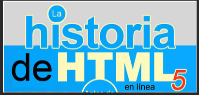
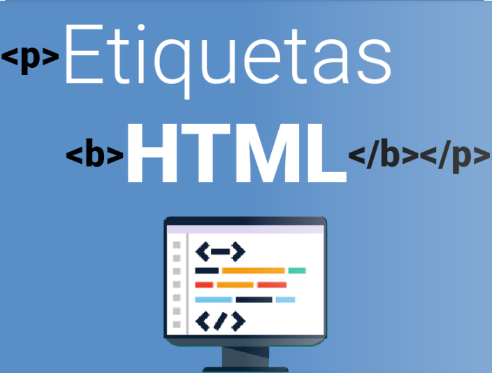

Inicio
Etiquetas
Atributos
CSS
JavaScript
Contacto
Acerca de
Inicio
Etiquetas
Atributos
CSS
JavaScript
Contacto
Acerca de
Contenido
¿Qué es HTML?
Historia HTML
Editores de HTML.
Tu primer documento HTML.
Que son Etiquetas en HTML?
atributos.html
¿Qué es Html?
HTML son las siglas en inglés de HyperText Markup Lenguage, que significa Lenguaje de Marcado de HiperTexto. Se
llama así al lenguaje de programación empleado en la elaboración de páginas Web,
y que sirve como estándar
de referencia para la codificación y estructuración de las mismas, a través de un código del mismo nombre
(html)..

La historia de HTML (HyperText Markup Language) es, en esencia, la historia misma del origen de la web. Todo
comienza a finales de la década de 1980, cuando Tim Berners-Lee, un científico británico que trabajaba en la
Organización Europea para la Investigación Nuclear (CERN), ideó una forma de intercambiar información científica
entre investigadores de manera eficiente..
¿Editores de HTML.?
El HTML está diseñado para ser tan fácil de usar, aprender y leer, y a menudo se combina con el CSS y el JavaScript. La mayoría de los desarrolladores web comienzan aprendiendo HTML, debido a su mínima curva de aprendizaje en comparación con otros. Escribir HTML puede ser tan simple como abrir el Bloc de Notas en su ordenador, escribir algunas marcas y guardarlo como un archivo . html. Incluso puede colocar el archivo en su navegador para ver cómo se ve

¿Tu primer documento HTML.?
Lo primero que tenemos que hacer es crear un nuevo documento. Hay varias maneras de crear un documento, pero yo
usaré el editor de texto
Sublime Text para hacerlo. Puedes usar cualquier editor de texto que prefierasPor
lo general, la página de inicio de un sitio se llama “index.html“. “index” indica que éste es el archivo por
defecto
que cargará el navegador.
En el nombre de la página sólo deben utilizarse caracteres alfanuméricos, guiones, guiones bajos o tildes..

¿Que son Etiquetas en HTML?
Es decir, las etiquetas HTML son el lenguaje utilizado para estructurar y definir el contenido en un documento HTML. Estas etiquetas se encuentran en el HTML (o Lenguaje de Marcado de Hipertexto) de cada página. Cada etiqueta contiene instrucciones sencillas que indican al navegador cómo dar formato al texto y a definir los diversos elementos de la página web. Al aplicar estas etiquetas de marcado a los diferentes elementos del texto, se indica al navegador cómo mostrarlos al usuario, lo que permite crear páginas web estructuradas y con un diseño coherente..

¿Que son Atributos en HTML?
Los atributos en HTML son propiedades adicionales que se añaden a las etiquetas para proporcionar información
extra sobre cómo deben comportarse o mostrarse los elementos. Siempre se colocan en la etiqueta
de apertura
y consisten en un nombre seguido de un valor, separados por un signo igual (=), con el valor entre comillas
dobles Los atributos en HTML se pueden considerar como información
adicional que se coloca siempre en la
etiqueta de apertura, esto para añadir, complementar información o significado al elemento HTML al que estamos
colocando.